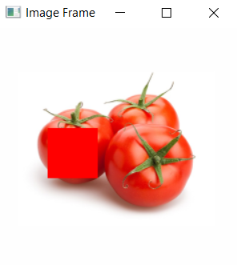
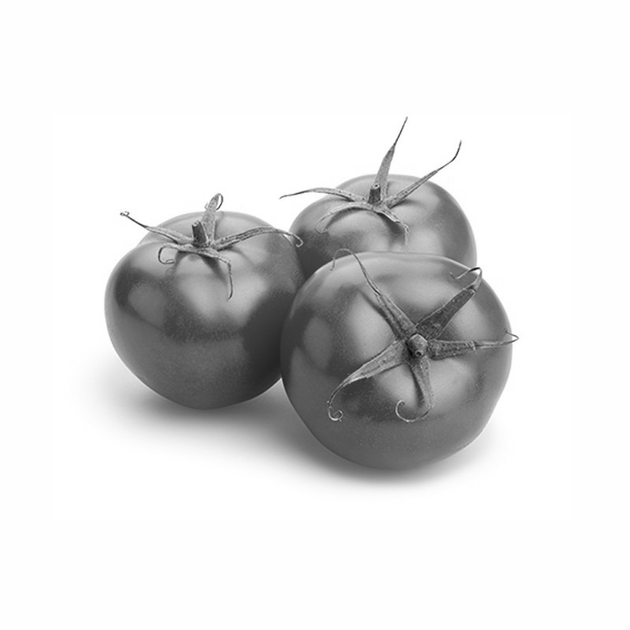

Please hold on for a moment...
Accessing and Modifying Image Pixels
Before accessing or modifying a pixel we have to import an image. For this example we are using the 'tomatoes.jpg' image.
image = cv2.imread('tomatoes.jpg') |

Now lets access the pixels of the image:
image[100:150,50:100] |
Let's try to modying the pixel which have been accessed using the following code
image = cv2.imread('tomatoes.jpg') image[100:150,50:100] = [255,0,0] |
We are slicing the image pixel using the above code. In x-axis we are accessing pixels from 100-150 and in the y-axis we are accessing pixels from 50-100 and changing it to rgb value 255,0,0(red, green, blue), which in this case change the pixels into red since green and blue values are set to 0.

Converting the image into gray scale
Grayscale is the process in which we convert an image from different color spaces(RGB, HSV, CMYK,etc) to the shades of gray.A grayscale image is simply one in which the only colors are shades of gray. The reason for differentiating such images from any other sort of color image is that less information needs to be provided for each pixel.
1 2 3 4 5 6 7 8 9 10 | import cv2 img = cv2.imread("tomatoes.jpg") #converting to gray scale gray_image = cv2.cvtColor(img, cv2.COLOR_BGR2GRAY) cv2.imshow('Grayscale', gray_image) cv2.waitKey() cv2.destroyAllWindows() |
Output
Test the code with your own images
Completed Successfully!